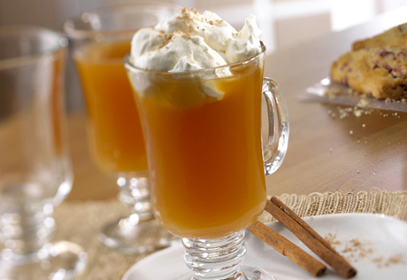
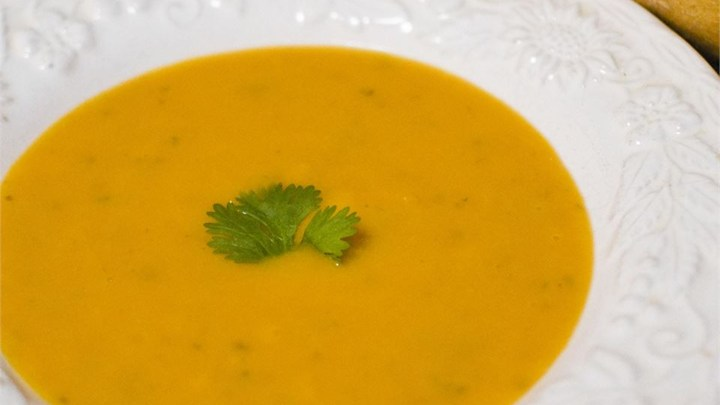
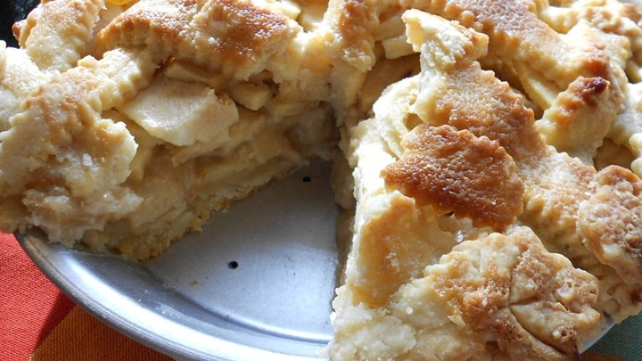

Fall Favorites
Spiced Apple Cider

Ingredients
- 8 cups apple cider
- 2 teaspoons ground cinnamon
- 1/8 teaspoon nutmeg
- 4 whole cloves
- 1 orange, cut into slices
- 1 cup sweetened whipped cream
Directions
- Prep: 10 min
- Cook: 5 min
- Servings: 8 cups
Recipe and Photo Courtesy of: www.campbells.com
Squash Soup

Ingredients
- 2 tablespoons butter
- 1 small onion, choppped
- 1 stalk celery
- 1 medium carrot, chopped
- 2 medium potatoes, cubed
- 1 medium butternut squash, peeled, seeded and cubed
- 1 (32oz) chicken stock
Directions
- Prep: 25 min
- Cook: 45 min
- Servings: 4 bowls
Recipe and Photo Courtesy of: www.allrecipes.com
Apple Pie

Ingredients
- 1 recipe pastry for a 9 in pie crust
- 1/2 cup unsalted butter
- 3 tablesppons all-purpose flour
- 1/4 cup water
- 1/2 cup white sugar
- 1/2 cup packed brown sugar
- 8 Granny Smith apples, peeled, cored, and sliced
Directions
- Prep: 30 min
- Cook: 1 hour
- Servings: 8 slices
Recipe and Photo Courtesy of: www.allrecipes.com